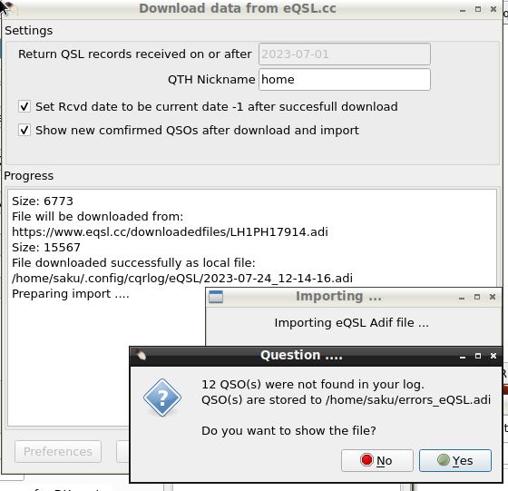

We assume that you have a working eQSL Account. If you are new to eQSL,
carefully read the instructions provided by the eQSL and set up your account.
Most important is to set the QTH nickname and dates to validate qsos with that name.
Select the QSO records you want to confirm.
Either whole log, or just files that have never been uploaded (that is the normal operation).
Be sure that
QTH Nickname is the same you defined at eQSL website setup.
Now click the
Upload button. A message will appear to inform you about ulpload progress.
From message you will see what is the adif file that were used for upload. It is saved and can be used afterwards if needed.
You see also how many records were added to eQSL.
eQSL download and processing
The main purpose of the eQSL download is to
mark existing QSO records as confirmed via eQSL.

Set the
date after to request QSL records. This is normally good to keep in current year for daily use.
It keep the download and porcessing fast. Every now and then set te date more back to past to see possible late confirms.
Be sure that
QTH Nickname is the same you defined at eQSL website setup.
If you press
Download data from eQSL website a progress
indicator is displayed in
Progress window.
You can also see the filename that was used to store records locally in case of future needs.
In case there are QSO records that are not found from your log an error file is written and you can see it by clicking
Yes button.
Note that this file may contain also SWL eQSLs reportings of your qsos heard by SWLs.
You can read more about import error file handling from
LoTW/eQSL import errors